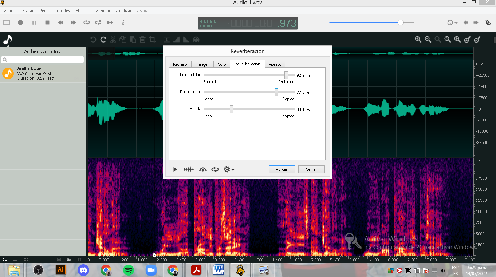

Fuente:
Samplerate:
44100.0Hz
Bitdepth:
16 Bit
Comentarios:
En el audio podemos escuchar una voz masculina presentando un evento.
Objetivo:
Lograr un efecto de reverberación en la voz. Simular que fue grabado en una habitación grande.
Imagen de OcenAudio, previsualizacion de forma de onda y vista espectral.
Se aplicó reverberación con estos parámetros
Resultado: